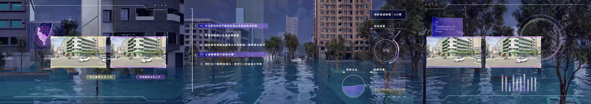
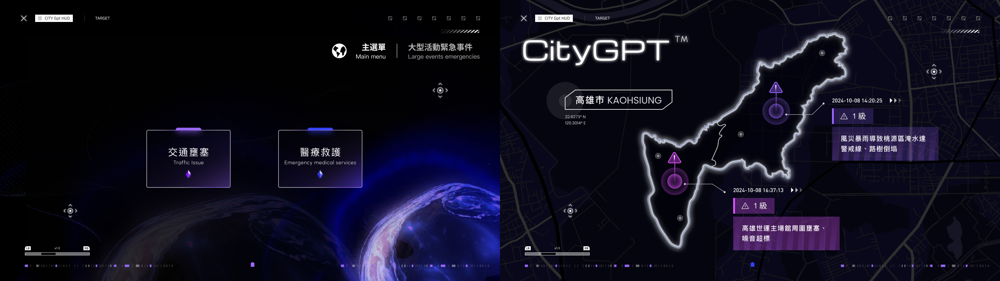

展區簡介
Hai Tech Day ( HHTD24 )，迄今已邁入第五年，去年我們將集團 3+3 發展策略融入了智慧製造、智慧電動車、智慧城市三大智慧平台。今年除了有全新的智慧電動車解決方案，展現科技創新的速度外，我們也會說明集團如何將 AI 的應用導入三大智慧平台，期待能讓外界感受到運用 AI 科技 “Accelerating Imagination” 的震撼！
Hon Hai Tech Day (HHTD24) has entered its fifth year so far. Last year, we integrated the group’s 3+3 development strategy into the three smart platforms of smart manufacturing, smart electric vehicles, and smart cities. In addition to launching new smart electric vehicle solutions this year, demonstrating the speed of technological innovation, we will also explain how the group has introduced the application of AI (artificial intelligence) into three major smart platforms, hoping to let the outside world experience the use of AI technology "Accelerating Imagination" What a shock!
生成式 AI 賦能城市治理
智慧城市系統全面收集和分析跨領域城市數據，使用生成式AI與城市管理者對話。GenAI-enabled City Governance
Comprehensive collection and analysis of cross-domain urban data, using generative AI to engage in dialogue with city managers.簡介
城市戰情室的數據來自於 IoT 設施、各局處業務承辦文件、各局處數位系統、Open Data 等等，由 AI Agents 進行數據分析、判讀，並提供建議，打造由「人工智慧輔助規劃、人類智慧專注決策」的高效率城市治理工具。

Data sources include IoT facilities, departmental business documents, digital systems from various bureaus, Open Data, and more. AI Agents perform data analysis, interpretation, and provide recommendations, creating a highly efficient urban governance tool where "Artificial Intelligence assists in planning, while human intelligence focuses on decision-making".
(AI technology adopted: Multimodal LLM on NVIDIA NIMs, Omniverse, Metroplis, etc.)
城市交通 Urban Traffic
CityGPT 扮演 AI 助理的角色，協助主管機關快速評估因風災豪雨淹水受到影響之大眾運輸，輔助主管機關和客運業者即時決策公車改道，並通報值勤中的駕駛長。
這些即時應變工作可於數分鐘內完成，擺脫現在各方以多個LINE群協作的複雜溝通。
CityGPT plays the role of an AI assistant, assisting authorities in quickly assessing public transportation affected by heavy rains and flooding, assisting authorities and passenger transport operators in making immediate decisions on bus diversions, and notifying on-duty driver commanders.
These real-time response tasks can be completed within minutes, eliminating the current complex communication between parties that use multiple LINE groups to collaborate.
路樹倒塌 Collapsed Road Tree
CityGPT 接收市區影像監控的異常通報，路樹倒塌影響交通，AI 助理依主管機關 SOP 建議交通管制措施；經決策者確認後，通知值勤中的公車駕駛長進行改道，並跟進路樹清除進度。
這個模式由 AI 輔助城市指揮中心，可於數分鐘內完成跨部門溝通並輸出特殊事件應變計畫，節省目前各方電話或LINE傳遞訊息、查資料、彙總報告、做決策的時間。
CityGPT receives abnormal notifications from urban image surveillance. The collapsed road tree affects traffic. The AI assistant recommends traffic control measures according to the SOP of the competent authority. After confirmation by the decision-maker, the bus driver on duty is notified to change the route and follows up on the progress of road tree removal.
This model is assisted by AI in the city command center, which can complete cross-department communication and output special event contingency plans within minutes, saving all parties the time currently spent on sending messages, checking information, summarizing reports, and making decisions via phone or LINE.
交通壅塞 Traffic Jam
大型展演活動散場，CityGPT 接收交通壅塞預警，AI 助理輸出增派接駁計畫；經決策者確認後，通知相關單位，啟動應變行動，並監督執行過程。
這使高雄市演唱會經濟在 AI 時代持續發熱，輔助主管機關更順利地完成一小時內疏散人潮的目標。
After the large-scale exhibition event is over, CityGPT receives traffic congestion warnings, and the AI assistant outputs an additional connection plan. After confirmation by the decision-maker, it notifies relevant units, initiates contingency actions, and supervises the implementation process.
This allows Kaohsiung City’s concert economy to continue to boom in the AI era, assisting the competent authorities to more successfully complete the goal of evacuating crowds within one hour.
醫療救護 Medical Aid
活動期間 CityGPT 收到民眾需緊急就醫的通報，AI 助理評估最適合的醫療院所並規劃最快速路徑，並通知救護車駕駛和沿線交通管理人員，啟動緊急車輛優先通行。
此類型緊急狀況可能涉及消防局、衛生局、交通局等多個單位，AI 輔助應變的機制可為民眾在分秒必爭的情況爭取到更多的救護時間。
During the event, CityGPT received notifications that people needed emergency medical treatment. The AI assistant evaluated the most suitable medical institutions and planned the fastest route. It notified ambulance drivers and traffic managers along the route to activate emergency vehicle priority.
This type of emergency situation may involve multiple units such as the fire department, health bureau, and transportation bureau. The AI-assisted response mechanism can buy more rescue time for the public when every second counts.
場站孿生 Digital Twin of eBus Station
客運業者為傳統產業，往往對科技較為陌生。雖依政府要求導入電動巴士，但對於電力供應、充電樁設置、排班行駛等所需配套措施，缺乏系統性規劃和有效數據輔助決策，往往等交車後才發現問題點。
運用場站數位孿生的技術，可讓客運業者在買車或修整場站之前，以 3D 模型和 AI 演算法，模擬充電基礎設施配置、評估電動巴士排班和出入動線，確認無誤後再執行，降低營運成本和風險。
Passenger transport operators are traditional industries and are often unfamiliar with technology. Although electric buses have been introduced in accordance with government requirements, there is a lack of systematic planning and effective data to assist decision-making in terms of supporting measures such as power supply, charging pile installation, and shift scheduling. Problems are often discovered only after the buses are delivered.
Using station digital twin technology, passenger transport operators can use 3D models and AI algorithms to simulate the configuration of charging infrastructure, evaluate electric bus schedules and entry and exit routes, and confirm that they are correct before proceeding. , reduce operating costs and risks.
Welcome to visit HHTD again!
鴻海精密工業股份有限公司著作權所有
Copyright © 2024 Hon Hai Precision Industry Co., Ltd.
All rights reserved.